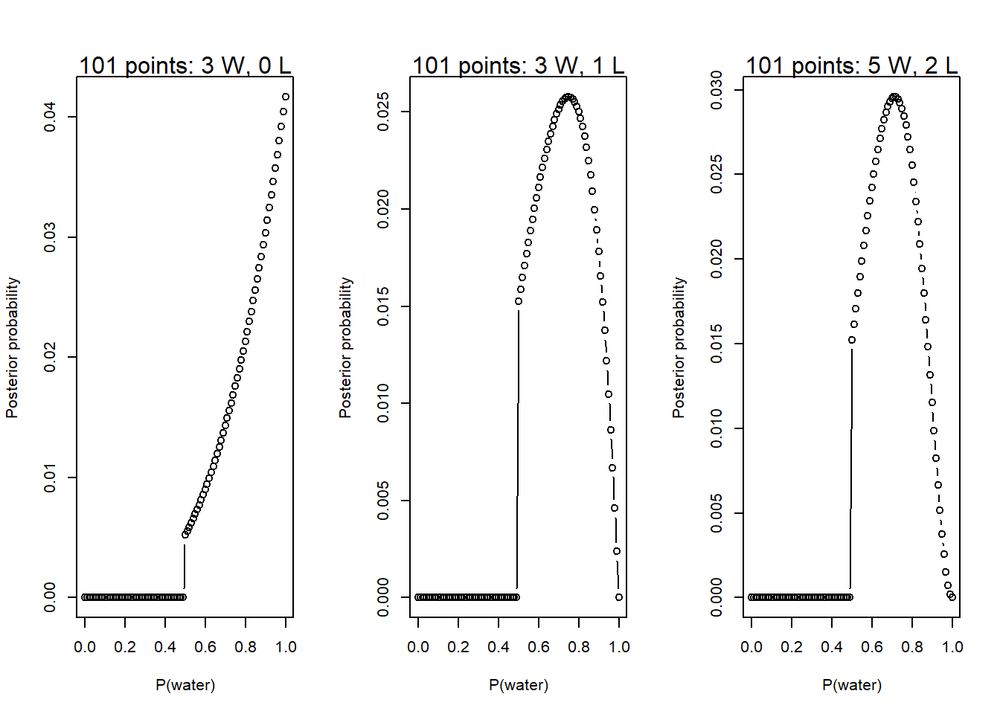

In this chapter, the basics of Bayesian probability models and updating are described using a motivating example where the percent coverage of water on Earth is estimated by tossing an inflatable globe. This chapter covers the mechanical parts of Bayesian models.
2.1 Chapter notes
Distinction between the small world, the self-contained world of the model, and the large world, the context in which the model is used. Remember that golems can’t see context.
Bayesian Inference Is Just Counting – explanation using tree diagrams. I think this is a good example for simple problems but I don’t think it generalizes well to real-life data analysis examples.
Bayesian updating: if you observe more data, you can use Bayes’ Rule to update your plausibilities for each of the possible results.
“There is no free lunch…a Bayesian golem must choose an initial plausibility, and a frequentist golem must choose an estimator. Both golems pay for lunch with their assumptions.”
Bayesian inference doesn’t distinguish between data and parameters in the same way that frequentist inference does. Instead, data are observed variable, and parameters are unobserved variables.
Likelihoods, priors, posteriors, Bayes’ rule, and other things I didn’t take notes on were covered in this section.
There are multiple numerical techniques for approximating Bayesian models, different “motors” for the golems. These include grid approximation, quadratic approximation, and Markov Chain Monte Carlo. How you fit the model is part of the model (the engine is part of the golem), and different fitting routines have different compromises and advantages.
Grid approximation: estimate the posterior probability of several different values of the parameter via brute force. I did a rough version on this in my blog post on Bayesian updating.
Define the grid of posterior values. You have to choose the set of points for evaluation.
Compute the value of the prior at each parameter value on the grid.
Compute the likelihood at each parameter value.
Compute the unstandardized posterior at each parameter value, by multiplying the prior and the likliehood.
Standardize the posterior by dividing each value by the sum of all values.
Quadratic approximation: as the number of parameters increases, the number of evaluations becomes \(\text{number of points} ^ \text{number of parameters}\). So more efficient methods (that make more assumptions are needed.) Quap assumes that the posterior is approximately Gaussian near the peak, essentially representing the log-posterior density as a quadratic function. N.b. quadratic approximation improves with the number of data points.
Find the posterior mode, usually accomplished by some optimization algorithm based on the gradient of the posterior. “The golem does not know where the peak is, but it does know the slope under its feet.”
Estimate the curvature near the peak, which is sufficient to compute a quadratic approximation of the entire posterior distribution.
See pp 41–43 for grid and quadratic approximation examples.
Markov chain Monte Carlo: useful for computing many models that fail for grid or quadratic approximation, and may have thousands of parameters. The final posterior may not even have a closed form. MCMC techniques rely on sampling from the posterior distribution rather than directly attempting to approximate the posterior. Since McElreath didn’t run his MCMC example in the book, I’ve included it here because I wanted to see the result.
2E4. Based on Bruno de Finetti’s statement “PROBABILITY DOES NOT EXIST,” the statement the probability of water is 0.7 from the earlier example is a statement about our beliefs. We know that there are several other factors underlying the globe-tossing experiment, but we cannot measure all of those factors, but sweeping them under the rug, we believe that about 70% of the time, our result should be water. The frequentist interpretation of this is as a long-run average probability, but in the bayesian interpretation, this is our prior belief for the next time we perform the experiment.
2M1. Assuming a uniform prior for \(p\), compute the grid approximate posterior for each of the following sets of observations: W, W, W, W, W, W, L, and L, W, W, L, W, W, W.
# Define a function that computes the grid-approximate posterior with uniform# prior for p given a sampled number of water and land tosses.globe_post <-function(w, l) {# Define the grid of points to evaluate p_grid <-seq(from =0, to =1, by =0.01)# Uniform prior on p: f(x) = 1 / (1 - 0) = 1 for all p prior <-rep(1, times =length(p_grid))# Compute the likelihood over the grid given the observed sample likelihood <-dbinom(w, size = w + l, prob = p_grid)# Compute the unstandardized posterior unstd.posterior <- likelihood * prior# Standardize the posterior posterior <- unstd.posterior /sum(unstd.posterior)# Make the plotplot(p_grid, posterior, type ="b", xlab ="P(water)",ylab ="Posterior probability")mtext(paste(length(p_grid), "points:", w, "W,", l, "L"))# Invisibly return posterior density estimateinvisible(posterior)}par(mfrow =c(1, 3))globe_post(3, 0)globe_post(3, 1)globe_post(5, 2)
2M2. Repeat the grid approximate calculations assuming a prior for \(p\) of the form
\[f(p) = \begin{cases} 0, & p < 0.5 \\ k, & p \geq 0.5\end{cases}.\]
Note that for \(\int_0^1 f(p) \ dp = 1,\) we must have \(k = 2\).
globe_post_step_prior <-function(w, l) {# Define the grid of points to evaluate p_grid <-seq(from =0, to =1, by =0.01)# Uniform prior on p: f(x) = 1 / (1 - 0) = 1 for all p prior <-ifelse(p_grid <0.5, 0, 1)# Compute the likelihood over the grid given the observed sample likelihood <-dbinom(w, size = w + l, prob = p_grid)# Compute the unstandardized posterior unstd.posterior <- likelihood * prior# Standardize the posterior posterior <- unstd.posterior /sum(unstd.posterior)# Make the plotplot(p_grid, posterior, type ="b", xlab ="P(water)",ylab ="Posterior probability")mtext(paste(length(p_grid), "points:", w, "W,", l, "L"))# Invisibly return posterior density estimateinvisible(posterior)}par(mfrow =c(1, 3))globe_post_step_prior(3, 0)globe_post_step_prior(3, 1)globe_post_step_prior(5, 2)

2M3. We want to compute \(\text{Pr}(\text{Earth} \mid \text{land})\) given the following information.
We can deduce that \[\begin{align*}
\text{Pr}(\text{land}) &= \text{Pr}(\text{land} \mid \text{Earth})\cdot\text{Pr}(\text{Earth}) + \text{Pr}(\text{land} \mid \text{Mars})\cdot\text{Pr}(\text{Mars}) \\
&= (0.3)(0.5) + (1.0)(0.5) = 0.65.
\end{align*}\]
So we compute \[\begin{align*}
\text{Pr}(\text{Earth} \mid \text{land}) &= \frac{\text{Pr}(\text{land} \mid \text{Earth})\cdot\text{Pr}(\text{Earth})}{\text{Pr}(\text{land})} \\
&= \frac{(0.3)(0.5)}{0.65} \approx 0.23.
\end{align*}\]
2M4. We have a deck of three cards: one with two white sides, one with a black side and a white side, and one with two black sides. If we draw one card with the black side up, what is the probability that the other side is also black?
We can solve this by directly calculating the conditional probability.
We get \(\frac{1}{3}\) for the joint probability since there are three cards, and only one of them has black on both sides. We get the individual probability of one black side being up as \(\frac{1}{2}\) by noticing that there are 6 sides that could be facing up, and 3 of them are black sides.
The way that I think scales better to the rest of the problems in this section is by counting the number of ways to get this answer.
If the card we drew was white on both sides, there are 0 ways we could observe a black side facing up.
If the card we drew was white on one side, there is 1 way to observe a black side facing up.
If the card we drew was black on both sides, there are 2 ways to observe a black side facing up (it could be either side).
So out of the three possible ways to generate the situation we observed, two of them have a second black side on the bottom, giving us our \(\frac{2}{3}\) probability.
2M5. If we add an extra card with two black sides, we update our calculations.
Still 0 ways if we draw the white/white card.
There’s still only 1 way to observe a black side facing up with a B/W card.
However, there are now 4 different black sides we could observe facing up with a B/B card.
So out of 5 ways to observe a black side facing up, four of them have the other side black, giving us a \(\frac{4}{5}\) probability.
2M6. Now, we suppose that the black ink is heavy. For every one way to pull the B/B card, there are two ways to pull the B/W card and three ways to pull the W/W card.
The number of ways to get one black side up has not changed from problem 2M4. There’s still one way with a B/W card and 2 ways with a B/B card. However, now there are \(2 \times 1 = 2\) ways to get the B/W card with the black side up, so the probability of the other side being black is now \(\frac{2}{4} = \frac{1}{2}\).
2M7. Now suppose we draw one card and get a black side facing up, then we draw a second card and get a white side facing up. We want to find the probability that the first card was the B/B card.
There are two ways for a black side to face up if the first card is B/B (either side could be face up). If this is the case, there are three ways for the second card to show white (one way if it is B/W or two ways if it is W/W). So, there are \(2 \times 3 = 6\) ways for us to observe what we did if this is true.
If the first card is B/W, there is only one way for a black side to be face up. Then, there are two ways for the second card to face up white (either side of the W/W card), giving \(1 \times 2 = 2\) ways for our data to occur if this is the truth.
The W/W card cannot be the first card, the data we observed rules this out.
Therefore, there is a \(6 / 8 = 3 /4\) probability that the first card is black on the bottom as well.
2H1. There are two species of panda, A and B, that are equally likely in the wild. In species A, twins occur 10% of the time. In species B, twins occur 20% of the time. Both species only have twins or singleton infants. If a panda of unknown species gives birth to twins, what is the probability her next birth will also be twins?
So, the probability we are interested in is \(P(\text{twins} \mid \text{twins})\). This is confusing, so I’ll say \(P(\text{twins}^* \mid \text{twins})\).
We can calculate that \[\begin{align*}
P(\text{twins}) &= P(\text{twins} \mid A) P(A) + P(\text{twins} \mid B) P(B) \\
&= (0.1)(0.5) + (0.2)(0.5) = 0.15.
\end{align*}\]
From the definition of conditional probability, we know that
So if a panda of unknown species gives birth to twins, the probability that her next birth will also be twins is \(1/6\), given the information we have.
2H2. Now we want to find the probability that the panda is species A, given that she gave birth to twins, i.e. \(P(A \mid \text{twins})\). Recall that \(P(\text{twins}) = 0.15,\)\(P(\text{twins} \mid A) = 0.1,\) and \(P(A) = 0.5.\) Then,
2H3. Suppose the panda has a second birth, a singleton infant. What is \(P(A)\) now?
Since we’ve already estimated \(P(A)\) for the first birth, I’ll call this \(P(A_\text{prior})\), instead of working out the entire conditional probability, we can update this estimate with our new information. What we want to calculate is
Now, the probability of having a singleton is mutually exclusive with the probability of having twins (since we know that these pandas never have more than twins), so \[P(\text{singleton} \mid A) = 1 - 0.1 = 0.9. \]
We get the singleton probability for pandas of species B in the same way. Next, we need to calculate the probability of a singleton, taking our prior probability that the panda is species A into account. We get
2H4. The new test for panda species has probabilities \(P(\text{test } A \mid A) = 0.8\) and \(P(\text{test } B \mid B) = 0.65.\) We want to know the probability that our panda is species A, given that her test result was A.
First we will ignore our prior probability and calculate the probability that any random panda is species A given that they test A.
We calculate that \(P(\text{test } A \mid B) = 1 - 0.65 = 0.35\) and therefore that \[\begin{align*}
P(\text{test } A) &= P(A)P(\text{test } A \mid A) + P(B)P(\text{test } B \mid B) \\
&= (0.5)(0.8) + (0.5)(0.35) = 0.575.
\end{align*}\]
Then,
\[P(A \mid \text{test } A) = \frac{(0.5)(0.8)}{0.575} \approx 0.6957.\]
Now, if we use our prior probability, \(P(A_\text{prior}) = 0.36\), we instead get that

-1.png)